정보처리기능사 (2006-07-16 기출문제)
1과목: 전자 계산기 일반
1. Accumulator(누산기)에 대한 설명으로 가장 적절한 것은?
- 연산부호를 해독하는 장치이다.
- 연산명령의 순서를 기억하는 장치이다.
- 연산명령이 주어지면 연산 준비를 하는 장치이다.
- 레지스터의 일종으로 산술연산 및 논리연산의 결과를 일시 기억하는 장치이다.
(정답률: 79%)

2. 다음 [보기]에 나열된 내용과 관계되는 장치는 어느 것인가?
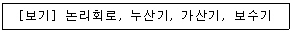
- 연산장치
- 기억장치
- 제어장치
- 보조기억장치
(정답률: 91%)
3. 다음 그림의 Gate는 어느 회로인가?
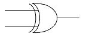
- exclusive-AND
- exclusive-NOR
- exclusive-OR
- OR
(정답률: 77%)
4. 동시에 여러 개의 입출력장치를 제어할 수 있는 채널은?
- Duplex Channel
- Multiplexer Channel
- Register Channel
- Selector Channel
(정답률: 89%)
5. 8진수 234를 16진수로 바르게 표현한 것은?
- 9C
- AD
- 11B
- BC
(정답률: 76%)
6. 그림의 전기회로를 컴퓨터의 논리회로로 치환하면?
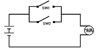
- AND
- OR
- NOT
- NAND
(정답률: 79%)
7. 다음논리회로에서 출력 f의 값은?
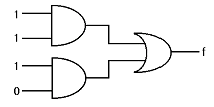
- 0
- 1
- 1/2
- -1
(정답률: 87%)
8. 다음 진리표와 같이 되는 논리회로는?
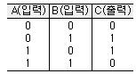
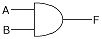
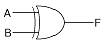
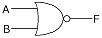
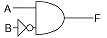
(정답률: 77%)
9. 특정 비트 또는 특정 문자를 삭제하기 위해 사용하는 연산은?
- OR 연산
- AND 연산
- MOVE 연산
- Complement 연산
(정답률: 60%)
10. 2개의 조건을 동시에 만족해야 출력하는 연산자는?
- OR
- NOT
- AND
- NAND
(정답률: 82%)
11. 이항(binary) 연산에 해당하는 것으로만 나열한 것은?
- ROTATE, AND
- MOVE, OR
- AND, OR
- SHIFT, AND
(정답률: 75%)
12. 누를 때 마다 ON, OFF가 교차되는 스위치를 만들고자 할 때 사용되는 플립플롭은?
- RS 플립플롭
- D 플립플롭
- JK 플립플롭
- T 플립플롭
(정답률: 65%)
13. 0-주소 명령은 연산시 어떤 자료구조를 이용하는가?
- STACK
- TREE
- QUEUE
- DEQUE
(정답률: 87%)
14. 아래의 보기는 명령어 인출절차를 보인 것이다. 올바른 순서로 나열된 것은?
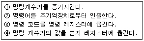
- ①→②→③→④
- ①→③→④→②
- ④→②→①→③
- ③→②→①→④
(정답률: 47%)
15. 전가산기(Full Adder)의 구성으로 옳은 것은?
- 1개의 반가산기와 2개의 OR 게이트 회로
- 2개의 반가산기와 1개의 OR 게이트 회로
- 1개의 AND 게이트 회로와 1개의 Exclusive OR 회로
- 2개의 반감산기만으로 구성
(정답률: 79%)
16. 기억장치 고유의 번지로서 0, 1, 2, 3 .......과 같이 16진수로 약속하여 순서대로 결정해 놓은 번지, 즉 기억장치 중의 기억장소를 직접 숫자로 지정하는 주소로서 기계어 정보가 기억되어 있는 번지는?
- 기호번지
- 상대번지
- 변위번지
- 절대번지
(정답률: 80%)
17. 명령어의 구성이 연산자부에 3bit, 주소부에 5bit로 되어 있을 때 이 명령어를 사용하는 컴퓨터는 최대 몇 가지의 동작이 가능한가?
- 256
- 16
- 8
- 32
(정답률: 66%)
18. 불대수 정리 중 옳지 않은 것은?
- A+A = 1
- A·A = A
- 1+A = 1
- A·1 = A
(정답률: 71%)
19. 입출력장치의 동작속도와 전자계산기 내부의 동작속도를 맞추는데 사용되는 레지스터는?
- 버퍼레지스터
- 시프트레지스터
- 어드레스레지스터
- 상태레지스터
(정답률: 81%)
20. 2진수 1001을 Gray Code로 변환하면?
- 1001
- 1010
- 1101
- 1110
(정답률: 63%)
2과목: 패키지 활용
21. 데이터베이스의 구조를 3단계로 구분할 때 해당되지 않는 것은?
- 내부스키마
- 외부스키마
- 개념스키마
- 내용스키마
(정답률: 84%)
22. 스프레드시트에서 반복 실행하여야 하는 동일 작업이나 복잡한 작업을 하나의 명령으로 정의하여 실행할 수 있는 기능을 무엇이라고 하는가?
- 슬라이드
- 매크로
- 필터
- 셀
(정답률: 83%)
23. 다음 SQL 검색문의 의미로 가장 적절한 것은?
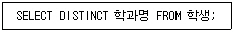
- 학생테이블의 학과명을 모두 검색하라.
- 학생테이블의 학과명을 중복되지 않게 모두 검색하라.
- 학생테이블의 학과명 중에서 중복된 학과명은 모두 검색하라.
- 학생테이블의 학과명을 구별하지 말고 모두 검색하라.
(정답률: 75%)
24. 프레젠테이션에서 각 페이지의 기본 단위를 의미하는 것은?
- 매크로
- 블록
- 슬라이드
- 프로젝터
(정답률: 82%)
25. INSA(SNO, NAME) 테이블에서 SNO가 100인 튜플을 삭제하는 SQL 문은?
- DELETE FROM INSA WHERE SNO = 100;
- REMOVE FROM INSA WHERE SNO = 100;
- DROP TABLE INSA WHERE SNO = 100;
- DESTORY INSA WHERE SHO = 100;
(정답률: 59%)
26. 프레젠테이션에서 프레젠테이션의 흐름을 기획한 것을 무엇이라고 하는가?
- 셀
- 개체
- 슬라이드
- 시나리오
(정답률: 80%)
27. 스프레드시트의 기능으로 거리가 먼 것은?
- 그래프 기능
- 슬라이드 쇼 기능
- 문서작성 기능
- 수치계산 기능
(정답률: 73%)
28. 다음 SQL 명령의 의미는?
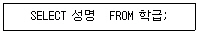
- 성명테이블에서 학급을 검색한다.
- 학급테이블에서 성명을 검색한다.
- 성명테이블과 학급테이블을 선택한다.
- 학급테이블에서 성명을 입력한다.
(정답률: 62%)
29. 데이터베이스의 기본 구성요소로 특정 항목에 대한 데이터의 집합이며 행과 열로 구성되어 있는 것은?
- 필드
- 레코드
- 테이블
- 매크로
(정답률: 53%)
30. 데이터베이스관리시스템(DBMS; DataBase Management System)의 주요 기능에 속하지 않은 것은?
- 관리기능
- 정의기능
- 조작기능
- 제어기능
(정답률: 70%)
3과목: PC 운영 체제
31. 윈도우98에서 하드디스크에 있는 파일을 휴지통에 버리지 않고 바로 삭제하려고 한다. 파일 선택 후 어떤 키를 눌러야 하는가?
- <Delete>
- <Alt> + <Delete>
- <Ctrl> + <Delete>
- <Shift> + <Delete>
(정답률: 72%)
32. 윈도우98에서 단축아이콘에 대한 설명으로 옳지 않은 것은?
- 바탕화면에서 단축아이콘을 삭제하면 실제 연결되어 있는 프로그램도 삭제된다.
- 실제 실행파일과 연결해 놓은 아이콘을 말한다.
- 사용자 임의로 단축아이콘을 생성하거나 삭제시킬 수 있다.
- 아이콘과 다른 것은 아이콘 밑에 화살표가 표시되어 있다는 것이다.
(정답률: 79%)
33. 운영체제를 제어프로그램(Control Program)과 처리프로그램(Process Program)으로 분류했을 때 제어프로그램에 해당하지 않는 것은?
- 감시프로그램(Super Program)
- 데이터 관리 프로그램(Data Management Program)
- 문제 프로그램(Problem Program)
- 작업 제어 프로그램(Job Control Program)
(정답률: 66%)
34. 시스템의 날짜를 변경하거나 확인할 수 있는 DOS 명령어는?
- TIME
- DATE
- CLS
- COPY
(정답률: 73%)
35. 다음 설명은 무엇에 관한 내용인가?
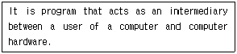
- Application Program
- Operating System
- Job Scheduling
- File System
(정답률: 68%)
36. 운영체제의 목적이 아닌 것은?
- 처리 능력(Throughput) 향상
- 턴어라운드 타임(Turnaround Time)의 증가
- 사용가능도(Availability)의 증대
- 신뢰도(Reliability)의 향상
(정답률: 78%)
37. 윈도우98의 탐색기에서 파일이나 폴더를 바탕화면에 단축아이콘을 만들 때 마우스와 함께 사용하는 단축키는 ?
- <Alt> + <Shift>
- <Ctrl> + <Alt>
- <Alt> + <Tab>
- <Ctrl> + <Shift>
(정답률: 53%)
38. 다중프로그래밍시스템 내에서 서로 다른 프로세스가 일어날 수 없는 사건을 무한정 기다리고 있는 것을 무엇이라고 하는가?
- 세마포어(Semaphore)
- 가베지 수집(Garbage Collection)
- 코루틴(Coroutine)
- 교착상태(Deadlock)
(정답률: 85%)
39. 윈도우98에서 바탕화면에 있는 아이콘을 정렬하려고 할 때 기본적으로 제공하는 아이콘 정렬방식이 아닌 것은?
- 계단식 정렬
- 크기별 정렬
- 자동 정렬
- 종류별 정렬
(정답률: 73%)
40. UNIX 시스템에서 명령어해석기에 해당하는 것은?
- 셀(Shell)
- 커널(Kernel)
- 유틸리티(Utility)
- 응용프로그램(Application Program)
(정답률: 45%)
41. 윈도우98의 클립보드에 대한 설명으로 옳지 않은 것은?
- 윈도우에서 자료를 일시적으로 보관하는 장소를 제공한다.
- 선택된 대상을 클립보드에 오려두기를 할 때 사용되는 단축키는 <Ctrl> + <V> 이다.
- 가장 최근에 저장된 파일 하나만을 저장할 수 있다.
- 클립보드에 현재 화면전체를 복사하는 기능키는 <Print Screen> 이다.
(정답률: 75%)
42. 도스(MS-DOS)에서 하드디스크를 논리적으로 여러 개의 디스크로 나누어 각 볼륨이 서로 다른 드라이브 문자를 가진 별개의 드라이브로 동작하도록 하는데 사용되는 명령어는?
- FDISK
- CHKDSK
- VOL
- XCOPY
(정답률: 67%)
43. 새로운 서브디렉토리를 만드는 MS-DOS 명령어는?
- COPY
- DEL
- MD
- DIR
(정답률: 66%)
44. Which is not Operating System?
- UNIX
- MS-DOS
- Windows98
- PASCAL
(정답률: 65%)
45. 윈도우98에서 지워진 파일이 임시로 보관되는 곳은?
- 휴지통
- 내 문서
- 내 컴퓨터
- 내 서류 가방
(정답률: 83%)
46. 도스(MS-DOS)에서 “ATTRIB" 명령 사용시에 읽기 전용 속성을 해제할 때 사용하는 옵션은?
- -H
- -S
- -A
- -R
(정답률: 67%)
47. 윈도우98에 대한 설명으로 옳지 않은 것은?
- 플러그 앤 플레이(Plug & Play) 방식이다.
- 32bit 운영체제이다.
- 파일명의 길이는 최대 8자리까지 가능하다.
- 멀티태스킹(Multi-tasking)를 지원한다.
(정답률: 68%)
48. 윈도우98에서 화면보호기의 설정은 어디에서 하는가?
- 시스템
- 멀티미디어
- 디스플레이
- 내게 필요한 옵션
(정답률: 68%)
49. 윈도우98에서 탐색기를 실행하였을 때 폴더 왼쪽에 있는 “+" 기호는 무엇을 의미하는가?
- 클릭하면 삭제된다.
- 폴더 내에 다른 폴더가 있다.
- 화면이 커진다.
- 클릭하면 단축아이콘이 생성된다.
(정답률: 65%)
50. UNIX 시스템에서 주로 사용하는 프로그래밍 언어는?
- Pascal
- Fortran
- C
- BASIC
(정답률: 84%)
4과목: 정보 통신 일반
51. 다음 중 디지털 통신 방식의 양자화 과정과 가장 관계가 깊은 신호변조 방식은?
- 위상편이 키잉 변조(PSK)
- 펄스부호 변조(PCM)
- 주파수편이 키잉 변조(FSK)
- 진폭 변조(AM)
(정답률: 32%)
52. 정보통신 교환망에 해당하지 않는 것은?
- 회선교환망
- 메시지교환망
- 패킷교환망
- 방송통신교환망
(정답률: 51%)
53. 등화기(Equalizer)를 가장 잘 설명한 것은?
- 송신측과 수신측에서 서로 신호의 레벨을 같게 하는 것이다.
- 누화를 방지하는 장치이다.
- 잡음의 발생 유무를 감지하기 위한 장치이다.
- 진폭 및 위상왜곡을 보상하기 위한 장치이다.
(정답률: 25%)
54. 다음 중 LAN의 특징이 아닌 것은?
- 광대역 통신 매체의 사용으로 고속 통신이 가능하다.
- 광역 공중망의 통신에 적합하다.
- 정보처리기기의 재배치 및 확장성이 뛰어나다.
- 다양한 디지털 정보전송이 가능하다.
(정답률: 41%)
55. 각 통화로에 여러 반송주파수를 할당하여 동시에 많은 통화로를 구성하는 방식은?
- 시분할 방식
- 공간분할 방식
- 온라인 방식
- 주파수분할 방식
(정답률: 54%)
56. 정보통신시스템의 기본 구성에 있어서 데이터회선 종단장치 혹은 신호변환기와 관계없는 것은?
- DCE
- DTE
- DSU
- MODEM
(정답률: 26%)
57. 다음 중 전송선로의 전기적인 1차 정수가 아닌 것은?
- 도체 저항(R)
- 도체 길이(I)
- 자기 인덕턴스(L)
- 정전 용량(C)
(정답률: 43%)
58. RS-232C 25핀 콘넥터 케이블에서 송신준비 완료 신호(CTS) 핀(Pin) 번호는?
- 4
- 5
- 6
- 7
(정답률: 46%)
59. 광통신 방식의 특징 중 옳지 않은 것은?
- 광대역 통신이다.
- 저손실이다.
- 경량, 세심이다.
- 전력유도가 많다.
(정답률: 52%)
60. 다음 중 PCM-24 방식에서 표본화 주파수[Hz]로 가장 적당한 것은?
- 800
- 1000
- 3400
- 8000
(정답률: 21%)